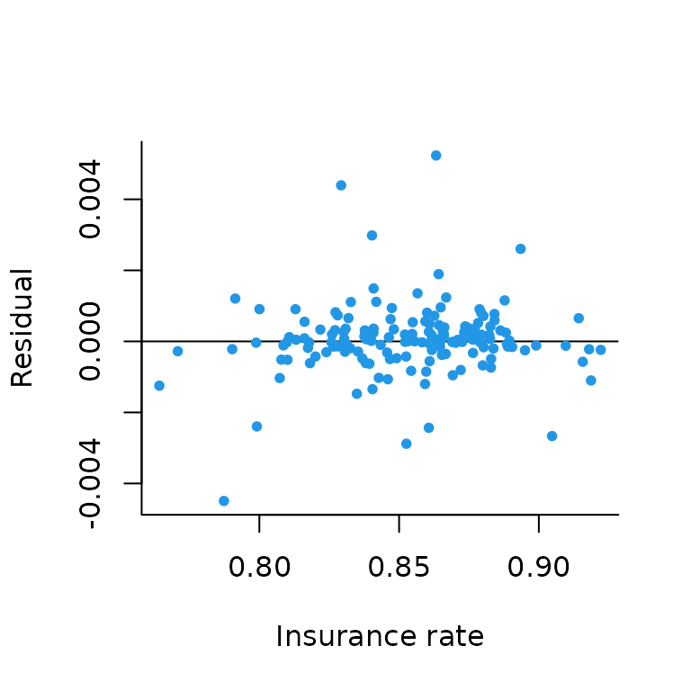

Working with American Community Survey data in geostan
Connor Donegan
September 13, 2021
Source:vignettes/spatial-me-models.Rmd
spatial-me-models.RmdIt is crucial that researchers examine the quality of their data, and it is best to build models that incorporate observational uncertainty. This vignette introduces users to the spatial measurement error (ME) models implemented in the geostan package (Donegan, Chun, and Griffith 2021). These models are particularly appropriate for working with American Community Survey (ACS) data and other large, government-backed surveys.
A premise of this methodology is that the survey includes a systematic spatial sampling design (i.e., the sampling procedure was stratified by areal unit, whether they be block groups, counties, or states).
Getting started
From the R console, load the geostan, sf, and tidyverse packages. This final line in this code chunk ensures that geostan uses parallel processing when possible.
library(geostan)
library(ggplot2)
library(sf)
library(tidyverse)
options(mc.cores = parallel::detectCores())
theme_set(theme_classic())
data(georgia)The line data(georgia) loads the georgia data set from the geostan package into your working environment. It contains estimates of county population characteristics from the American Community Survey (ACS) for the period 2014-2018, with corresponding standard errors (as indicated by the .se suffix). You can learn more about the data by entering ?georgia to the R console.
This vignette will make use of the index of concentration at the extremes (ICE) (Massey 2001). The ICE is the difference between the proportion of the population that is poor and the proportion that is rich: \[\text{ICE} = \text{Proportion Rich} - \text{Proportion Poor,}\] where “rich” and “poor” are defined as the top and bottom quintiles of the US household income distribution (\(< \$20,000\) and \(>= \$120,000\)), respectively. It ranges from -1, for an entirely impoverished population, to 1, for an entirely wealthy population.
sp_diag(georgia$ICE, georgia, name = "ICE")In this vignette, we will examine the ICE standard errors and build a probability model for the actual ICE values (in other words, a model for the sampling errors present in the survey estimates). The purpose of the vignette is provide a guide to critically evaluating your data and the geostan model.
Examining survey standard errors
Since the ICE is a composite variable, its standard errors were created using the Census Bureau’s variance replicate tables (United States Census Bureau 2019). Examining the standard errors directly is informative, but not quite enlightening:
sp_diag(georgia$ICE.se, georgia, name = "SE(ICE)") They look harmlessly small; but that may be deceptive because the ICE has small range. How much variation is there in the ICE estimates?
They look harmlessly small; but that may be deceptive because the ICE has small range. How much variation is there in the ICE estimates?
## [1] 0.126393## [1] 0.09241624For continuous measures like the ICE, it is helpful to scale the standard errors by the scale of the data. Using the median absolute deviation (MAD) is a good option:
scaled_se <- georgia$ICE.se / mad.ice
ggplot() +
geom_histogram(aes(scaled_se),
col = 'gray50',
binwidth = 0.05
) No we can see that the amount of uncertainty in the estimates is substantively quite high; in other words, many of these estimates are fairly unreliable. We can also see there are strong spatial patterns in the reliability of the estimates.
No we can see that the amount of uncertainty in the estimates is substantively quite high; in other words, many of these estimates are fairly unreliable. We can also see there are strong spatial patterns in the reliability of the estimates.
Modeling errors of observation
The unknown errors, \(\delta_i\), are defined as the difference between the survey estimate, \(z_i\), and the actual value that would have been obtained by an accurate census taken over the same time period, \(x_i\): \[\delta_i = z_i - x_i.\] For present purposes, we will take for granted the high quality of the Census Bureau’s systematic spatial sampling design (on spatial sampling, see Chun and Griffith 2013), and thus, we do not expect there to be any spatial pattern to the errors, \(\delta_i\).1
While our standard errors are an indicator of data reliability, the actual errors are unknown. Using Bayes’ theorem and the information at our disposal, we can create a probability distribution for these errors. To rephrase, we want to obtain a well-reasoned probability distribution for the correct values, \(x_i\) (since \(\delta_i\) is a simple function of \(z_i\) and \(x_i\)). That is, we need to reason about \[p(\boldsymbol x | \boldsymbol z, \mathcal M),\] where \(\mathcal M\) represents our relevant background knowledge. \(\mathcal M\) includes the premise that this data was collected using a valid spatial sampling design. For notational convenience, we will also let \(\mathcal M\) include the standard errors, \(\boldsymbol s\). (If we had different information at our disposal, then the probability distribution for \(\boldsymbol x\) would obviously change.)
By Bayes’ theorem: \[\begin{equation} \begin{split} p(\boldsymbol x | \boldsymbol z, \mathcal M) &\propto p(\boldsymbol z | \boldsymbol x, \mathcal M) p(\boldsymbol x | \mathcal M) \\ &\propto \text{Likelihood} \times \text{prior} \end{split} \end{equation}\]
The ME models implemented in geostan are hierarchical Bayesian models (HBMs) that incorporate two sources of information: a sampling distribution for the survey estimates, and generic background knowledge on social variables (Donegan, Chun, and Griffith 2021). The former is a likelihood statement that states: for a given true value, \(x_i\), and standard error, \(s_i\), the probability of obtaining survey estimate \(z_i\) is \[z_i \sim Gauss(x_i, s_i).\] This reflects the statement that \(\delta_i\) are not systematically patterned, and it is consistent with conventional ‘margins of error’ for survey estimates.
The relevant background knowledge includes our basic understanding of contemporary social inequality, such that extreme values are not implausible, as well as our knowledge that social variables tend to be spatially patterned, such that extreme values often cluster together. This information is encoded into a probability distribution for the unknown set of values, \(\boldsymbol x\), using the conditional autoregressive (CAR) model: \[ \boldsymbol x \sim Gauss(\mu \cdot \boldsymbol 1, \Sigma). \] This is a multivariate normal distribution with a constant mean, \(\mu\), and covariance matrix \[\boldsymbol \Sigma = (I - \rho C)^{-1} M .\] \(\Sigma\) contains the spatial connectivity matrix, \(\boldsymbol C\). \(M\) is a diagonal matrix that contains the scale parameter, \(\tau^2\), multiplied by given constant terms. There are numerous ways to specify \(C\) and \(M\) with the CAR model (see geostan::prep_car_data).
The parameters \(\mu\), \(\rho\), and \(\tau\) all require prior probability distributions; geostan uses the following by default: \[\begin{equation} \begin{split} \mu &\sim Gauss(0, 100) \\ \tau &\sim Student_t(10, 0, 40) \\ \rho &\sim U(\text{lower_bound}, \text{upper_bound}) \end{split} \end{equation}\]
The default prior for \(\rho\) is uniform across its entire support (determined by the extreme eigenvalues of \(C\)).
It is always best to think carefully about prior distributions and to use custom values for the prior parameters.
ME models in geostan
These ME models can be implemented using any of the geostan model fitting functions (stan_glm, stan_car, stan_esf, and stan_icar). These functions have a formula interface, so that the basic user experience is similar to using base::glm. For example, if we were to fit a linear model to the log-mortality rates, we could start with the following code:
For now, we are just going to use stan_glm to set up our ME models. To tell stan_glm to ignore the outcome data, we add prior_only = TRUE to our call to stan_glm, as demonstrated below.
First, we need to build a list containing all the data required for the ME model. This includes a data.frame with standard errors and data for the CAR model (\(C\), \(M\), and related information required by Stan):
# use binary weights matrix for prep_car_data
C <- shape2mat(georgia, style = "B")
cp <- prep_car_data(C, style = "WCAR")## Range of permissible rho values: -1.661134 1
ME <- list(
se = data.frame(ICE = georgia$ICE.se),
car_parts = cp
)When using prep_car_data, provide a binary weights matrix (not row-standardized!). Finally, we have to remember that the ICE can only range from -1 to 1. To add this information to the model, we add an element to our ME list named bounds:
ME$bounds <- c(-1, 1)As indicated, geostan will use its default priors if none are provided. The following code demonstrates setting custom priors for \(\mu\) (location) and \(\tau\) (scale), which should be done (and should be done with care; see ?stan_glm for details):
ME$prior <- list(location = data.frame(location = 0,
scale = 0.5),
scale = 1
)Note that these priors are weak relative to the natural constraints on the ICE. Since the ICE has extreme values of -1 and 1, the mean can only be found within that range. We would be shocked if the mean ICE were near either of those extremes!
To sample from our spatial ME model, We pass our ME data to stan_glm and (for the sake of efficiency) use prior_only = TRUE:
## ----
## *Setting prior parameters for measurement error models## *Location (mean)
## Gaussian## location scale
## ICE 0 0.5##
## *Scale
## Student's t## df location scale
## ICE 10 0 1##
## *CAR spatial autocorrelation parameter (rho)
## Uniform## minimum maximum
## -1.661134 1.000000## ----##
## *Setting prior parameters for intercept## Gaussian## location scale
## -4.169701 5.000000##
## *Setting prior parameters for beta
## Gaussian## Location Scale
## ICE 0 5##
## *Setting prior parameters for sigma## Student's t## df location scale
## 10 0 3Note that prior_only = TRUE will prevent stan_glm from considering the outcome, log(rate.male); for the sake of convenience and simplicity, the entire ME model for covariates is treated as part of the “prior” by prior_only, though this is certainly an abuse of terms.
Evaluating spatial ME models
geostan provides a set of diagnostics for its ME models, accessible through the me_diag function. The purpose of the diagnostics is partly to evaluate the quality of the data, and partly to interrogate the adequacy of the model.
As stated previously, sampling error does not contain systematic spatial patterns. So it is important to look at spatial autocorrelation in the probability distribution for \(\delta_i\). We also would like to know how much uncertainty the model assigns to each of the \(x_i\) values. We just have to provide me_diag with the fitted model, the name of the variable, and the underlying spatial object:
# style = "B" uses binary matrix for the Moran plot
me_diag(fit, 'ICE', georgia, style = "B")
The point-interval plot on the left hand side of the panel shows the ACS estimates on the horizontal axis against a summary of the posterior distribution on the vertical axis. This provides an indication of 1) the amount of uncertainty present in each of those values, and 2) the degree to which our posterior probability distribution may have shifted away from the survey estimates (\(\delta_i\)). The middle panel is a Moran plot of the differences between the posterior means and the raw values (we could call that \(\hat{\delta}_i\)); the third panel is a map of \(\hat{\delta}_i\).
Two things stand our from the ME diagnostics: there is quite a lot of uncertainty about values in impoverished areas, which is rather typical (this is, in fact, the motivation for implementing these models). Second, there is no spatial autocorrelation apparent in the the \(\delta_i\) values. The small negative MC value is what we hope to see: it is a product of spatial smoothing.
A limitation of these ME models is that they do not use covariates, which means we should be cognizant of social patterns and biases that might be present in this model. For instance, a deeply impoverished county surrounded by much less impoverished counties could appear anomalous in the eyes of this model, such that the model becomes overly confident in stating that the the degree of impoverishment is actually less than implied by the ACS estimate. American Indian reservations are an important and common example of areas that conflict with the premise that counties tend to be similar to their neighbors.
To look more closely at the model results, we can have me_diag return the index value for the observations with the \(k\) largest \(\delta_i\) values:
me_diag(fit, 'ICE', georgia, style = "B", index = 5)## Identifying the top 5 observations as ordered by their Delta values (Delta = posterior mean of x - raw x value):## x.raw x.mu x.lwr x.upr Delta
## x_ICE[105] -0.3412494 -0.3075213 -0.3904085 -0.2284959 0.03372807
## x_ICE[91] -0.4016787 -0.3685673 -0.4542991 -0.2861695 0.03311131
## x_ICE[90] -0.2798395 -0.2550558 -0.3282070 -0.1830403 0.02478374
## x_ICE[39] -0.3236583 -0.2997986 -0.3797201 -0.2206139 0.02385970
## x_ICE[84] -0.2420780 -0.2237654 -0.2856798 -0.1631044 0.01831255
Or, we can have me_diag return results as raw data (it will also return a list of ggplots):
## x.raw x.mu x.lwr x.upr Delta
## x_ICE[1] -0.24576780 -0.23639977 -0.29219806 -0.180554975 9.368027e-03
## x_ICE[2] -0.27540984 -0.26748934 -0.32223439 -0.213383177 7.920497e-03
## x_ICE[3] -0.01856313 -0.01811673 -0.03410284 -0.002425829 4.464001e-04
## x_ICE[4] 0.05059098 0.05056010 0.04295962 0.058124101 -3.088703e-05
## x_ICE[5] 0.14701110 0.14444345 0.12386086 0.165267804 -2.567650e-03
## x_ICE[6] 0.16649112 0.16619407 0.15793507 0.174513525 -2.970489e-04Lets scale these by the MAD of the ICE:
scaled_delta <- delta$Delta / mad.ice
ggplot() +
geom_histogram(aes(scaled_delta),
col = 'gray50',
binwidth = 0.05
)
Most are minuscule, but a few are not. We can follow up on this information by examining demographic information on the counties with the largest \(\delta_i\):
georgia[c(91, 105, 90, 39, 143), c("white", "black", "ai", "ICE", "ICE.se", "college", "college.se")]## Simple feature collection with 5 features and 7 fields
## Geometry type: MULTIPOLYGON
## Dimension: XY
## Bounding box: xmin: -85.06359 ymin: 30.58092 xmax: -82.41898 ymax: 33.46918
## Geodetic CRS: NAD83
## white black ai ICE ICE.se college college.se
## 91 65.35667 27.61382 0.05932078 -0.4016787 0.04806692 11.1 2.127660
## 105 56.06500 42.10858 0.45345761 -0.3412494 0.04801373 12.8 2.492401
## 90 24.22964 72.29057 0.00000000 -0.2798395 0.04151013 8.8 1.641337
## 39 24.62761 54.10460 0.14895730 -0.3236583 0.04715834 11.2 1.945289
## 143 55.10623 42.37084 0.00000000 -0.2395249 0.04010343 9.4 1.398176
## geometry
## 91 MULTIPOLYGON (((-82.97125 3...
## 105 MULTIPOLYGON (((-82.92786 3...
## 90 MULTIPOLYGON (((-83.25346 3...
## 39 MULTIPOLYGON (((-85.05141 3...
## 143 MULTIPOLYGON (((-83.59766 3...This is helpful, since we have a sense now that these are low-income areas with fairly large Black and Hispanic/Latinx populations.
In this case, these \(\delta_i\) values are not reason for concern. We can see in the point-interval plot given by me_diag that for each of these counties, the model places substantial probability on values of the ICE that are more extreme than the raw ACS estimates. The posterior probability distribution for the ICE in Clinch County, for example, has a 95% credible interval of [-0.45 -0.28], while the ACS estimate is -0.40. Here is the probability distribution for the ICE in Clinch County:
plot(fit, pars = "x_ICE[91]")## `stat_bin()` using `bins = 30`. Pick better value with `binwidth`.
The somewhat large \(\delta_i\) values for Clinch County and others are largely a product of the very large standard errors on these estimates, which encompass ICE values that are quite extreme. For example, the ACS estimate for the ICE in Clinch County is \(-0.40\) (SE = 0.048), implying a 95% margin of error ranging from -0.5 to -0.3. A benefit of these models is their ability to identify extreme values (in this case, values near -0.5) as fairly implausible given the rest of our data.
Large \(\delta_i\) values can provide a warning that your data may be of particularly low quality; strong social or spatial patterns in \(\delta_i\), on the other hand, should prompt you to ask further questions about the adequacy of the model.
Working with MCMC samples from ME models
Stan is a platform for conducting Bayesian inference using Markov chain Monte Carlo (MCMC). Rather than calculate probability density functions analytically, Stan uses an MCMC algorithm to draw samples of values from the target distribution. geostan consists of pre-compiled Stan models, and users can always access the MCMC samples returned by Stan. When extracted as a matrix of samples (as below), each row represents a draw from the joint probability distribution for all model parameters, and each column consists of samples from the marginal distributions of each parameter.
The ME models return samples for every \(x_i\) as well as the model parameters \(\mu\) (“mu_x_true”), \(\rho\) (“car_rho_x_true”), and \(\tau\) (“sigma_x_true”). We can access these using as.matrix (or as.array or as.data.frame).
## [1] 4000 1
mean(mu.x)## [1] -0.1304039We can visualize these using plot:
## `stat_bin()` using `bins = 30`. Pick better value with `binwidth`.
To extract samples from the joint probability distribution for \(\boldsymbol x\), use the generic parameter name “x_true”:
## [1] 4000 159If we wanted to calculate the mean of each of these marginal distributions, we could use apply with MARGIN = 2 to summarize by column:
## x_ICE[1] x_ICE[2] x_ICE[3] x_ICE[4] x_ICE[5] x_ICE[6]
## -0.23639977 -0.26748934 -0.01811673 0.05056010 0.14444345 0.16619407With a matrix of samples, we can also ask questions of the joint probability distribution by applying summary functions to each row (as each row of the matrix of samples is a draw from the joint distribution of parameters), which results in a vector of samples. Those samples can be summarized again (e.g., by their mean) or visualized. Here is the probability distribution for the amount of spatial autocorrelation in \(\boldsymbol x\), the true ICE values, as indexed by the Moran coefficient:
x.mc <- apply(x, 1, mc, w = C)
ggplot() +
geom_histogram(aes(x.mc),
col = 'gray50',
binwidth = 0.01)Incorporating ME models into larger spatial models
Incorporating these ME models into any other geostan model is as simple as removing the prior_only argument (or setting it to FALSE). To illustrate:
## ----
## *Setting prior parameters for measurement error models## *Location (mean)
## Gaussian## location scale
## ICE 0 0.5##
## *Scale
## Student's t## df location scale
## ICE 10 0 1##
## *CAR spatial autocorrelation parameter (rho)
## Uniform## minimum maximum
## -1.661134 1.000000## ----##
## *Setting prior parameters for intercept## Gaussian## location scale
## -4.169701 5.000000##
## *Setting prior parameters for beta
## Gaussian## Location Scale
## ICE 0 5##
## *Setting prior parameters for sigma## Student's t## df location scale
## 10 0 3References
Chun, Yongwan, and Daniel A Griffith. 2013. Spatial Statistics and Geostatistics: Theory and Applications for Geographic Information Science and Technology. Sage.
Donegan, Connor, Yongwan Chun, and Daniel A Griffith. 2021. “Modeling Community Health with Areal Data: Bayesian Inference with Survey Standard Errors and Spatial Structure.” International Journal of Environmental Research and Public Health 18 (13): 6856. https://doi.org/10.3390/ijerph18136856.
Massey, Douglas. 2001. “The Prodigal Paradigm Returns: Ecology Comes Back to Sociology.” In Does It Take a Village? Community Effects on Children, Adolescents, and Families, edited by Alan Booth and Ann Crouter, 41–48. Lawrence Erlbaum Associates.
United States Census Bureau. 2019. 2015–2019 Variance Replicate Tables Documentation. Suitland, MD, USA: U.S. Department of Commerce, Bureau of the Census https://www.census.gov/programs-surveys/acs/data/variance-tables.html.
By definition, any systematic pattern in the errors, \(\delta_i\), is not due to sampling error—it is bias, necessarily in addition to sampling error (and spatial patterns that arise by chance are already accounted for in the probability model for sampling error). Bias is a far more difficult inferential problem, and to model it would require more information than we have. Hence, we take for granted the structural validity of the survey design for present purposes (i.e., we proceed as if we believed the bias were zero).↩